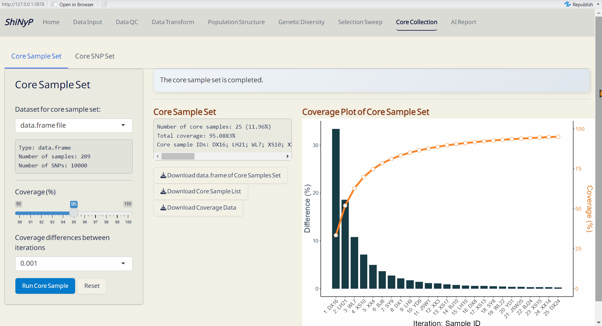
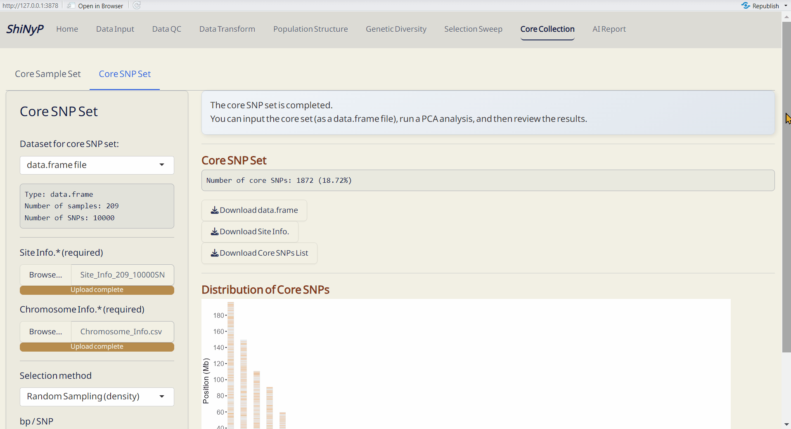

7 Core Collection
➡️ This section includes two subpages: Core Sample Set, and Core SNP Set, allowing you to capture the key samples and SNPs.

7.1 Core Sample Set
Establish a core collection that represents the genetic variation of the entire population. This approach is modified function from GenoCore (Jeong et al. 2017).
Steps:
- Choose the minimum genetic coverage (%).
- Choose the minimum genetic coverage differences between iterations.
- Click Run Core Sample to perform core collection.
Outputs:
- Core Sample Coverage Data (CSV): A table listing the coverage (%) of each iteration and coverage differences between iterations.
- Core Sample Set (RDS): A data.frame of core samples and their genotypic information.
- Core Sample Info. (CSV): A table listing whether each sample is included in the core collection or not, and can be used as input data in the Population Structure/PCA subpage.
- Coverage Plot of Core Sample Set (PDF): Visualizes the sample coverage by each iteration.

7.2 Core SNP Set
Establish a core SNP collection that represents the genetic variation observed in the full dataset or a random SNP set.
Required Files:
data.frame
Site Info. (RDS) of the current data.frame, downloadable from Data Input or Data QC pages
-
Chromosome Info. (CSV): Reference genome information of the current study. For more details about this file, refer to Section 2.3 (SNP Density).
DAPC Object (DAPC_dapc_Object.rds), downloadable from Population Structure/DAPC subpage.
Steps:
- Upload required datasts: Site Info. (RDS) and Chromosome Info. (CSV).
- Choose the method and Upload DAPC Object (RDS) or set the parameter.
- Click the Run Core SNP to perform core collection.
Outputs:
- Core SNP Set (RDS): A data.frame of core SNPs and their genotypic information.
- Core SNP Info. (RDS): A table listing whether each SNP is included in the core collection or not.
- Distribution of Core SNPs (PDF): An ideogram labeling the core SNPs.
- Site Info. of Core SNPs (RDS): Core SNPs site information file.
